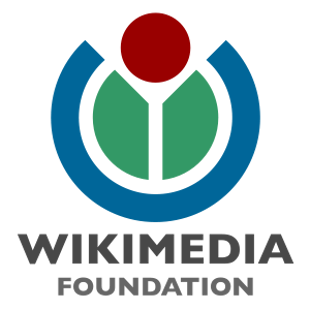
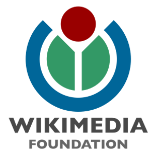
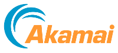
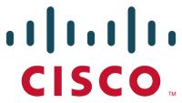
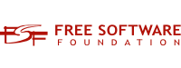
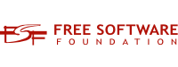
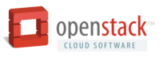
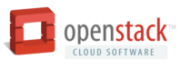

Outreachy is the successor of the Outreach Program for Women. Please see its page for the information about the May 2015 round of interships.
Outreach Program for Women has been helping women (cis and trans), trans men, and genderqueer people get involved in free and open source software. It provided a supportive community for beginning to contribute any time throughout the year and offered focused internship opportunities twice a year with a number of free software organizations. This work is continued by Outreachy, with the goal of expanding the program to more participants from underrepresented backgrounds.
Participants
44 interns were accepted for December 2014 - March 2015 round of the Outreach Program!
Find out who is participating in this round!Sponsors
The Outreach Program is organized by the GNOME Foundation. The internships in the December 2014 - March 2015 round are generously sponsored by the following organizations and companies:
Equalizers
 

Promoters

Includers
  


 



 Become a sponsor!
Become a sponsor!
Partners
GNOME Foundation provides an organizational home for the Outreach Program with administrative and infrastructure support.

Red Hat supports the Outreach Program by contributing its employee time towards the organization of the program.

Software Freedom Conservancy supports the Outreach Program by contributing its employee time towards the organization of the program.

About
The Outreach Program for Women (OPW) was inspired by Google Summer of Code and by how few women applied for it. The GNOME Foundation first started OPW with one round in 2006, and then resumed the effort in 2010 with rounds organized twice a year. In the May 2012 round, the Software Freedom Conservancy joined OPW with one internship with the Twisted project. In the January 2013 round, many other free and open source organizations joined the program. For the May 2015 round, the program was renamed to Outreachy with the goal of expanding to engage people from various underrepresented groups and was moved to the Software Freedom Conservancy as its organizational home.
This program has been a welcoming link that connects talented and passionate newcomers with people working in free and open source software and guides them through their first contribution. Through the outreach program, participants learn how exciting and valuable work on software freedom can be, while helping us to build a more inclusive community.
Follow @outreachy on Twitter to get the latest news.